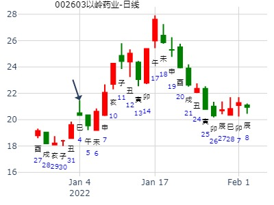
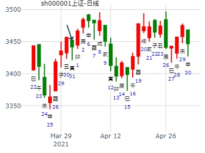

主帖标题: 元月16-20日大盘涨跌卦
占事：元月16-20日大盘涨跌？
公历起卦时间：2012年1月13日15时8分 (手工指定)
干支：辛卯年 辛丑月 癸酉日 庚申时 （日空：戌亥）
坤宫：水地比 (归魂) 坤宫：水地比 (归魂)
六神 伏神 本 卦 变 卦
白虎 妻财戊子水 ▅▅ ▅▅ 应 妻财戊子水 ▅▅ ▅▅ 应
腾蛇 兄弟戊戌土 ▅▅▅▅▅ 兄弟戊戌土 ▅▅▅▅▅
勾陈 子孙戊申金 ▅▅ ▅▅ 子孙戊申金 ▅▅ ▅▅
朱雀 官鬼乙卯木 ▅▅ ▅▅ 世 官鬼乙卯木 ▅▅ ▅▅ 世
青龙 父母乙巳火 ▅▅ ▅▅ 父母乙巳火 ▅▅ ▅▅
玄武 兄弟乙未土 ▅▅ ▅▅ 兄弟乙未土 ▅▅ ▅▅
安圆圆 占事：我大嫂的北纬通信在今年一月的走势如何
公历起卦时间：2015年1月5日16时49分 (电脑自动)
干支：甲午年 丙子月 辛巳日 丙申时 （日空：申酉）
坤宫：水地比 (归魂) 坤宫：水地比 (归魂)
六神 伏神 本 卦 变 卦
腾蛇 妻财戊子水 ▅▅ ▅▅ 应 妻财戊子水 ▅▅ ▅▅ 应
勾陈 兄弟戊戌土 ▅▅▅▅▅ 兄弟戊戌土 ▅▅▅▅▅
朱雀 子孙戊申金 ▅▅ ▅▅ 子孙戊申金 ▅▅ ▅▅
青龙 官鬼乙卯木 ▅▅ ▅▅ 世 官鬼乙卯木 ▅▅ ▅▅ 世
玄武 父母乙巳火 ▅▅ ▅▅ 父母乙巳火 ▅▅ ▅▅
白虎 兄弟乙未土 ▅▅ ▅▅ 兄弟乙未土 ▅▅ ▅▅
主帖标题: Q以岭药业2022.1.4丁巳二-1.7庚申五哪日顶？
以岭药业2022.1.4-1.7哪日顶？
公历起卦时间：2022年1月4日11时14分 (电脑自动)
干支：辛丑年 庚子月 丁巳日 丙午时 （日空：子丑）
坤宫：水地比 (归魂) 坤宫：水地比 (归魂)
六神 伏神 本 卦 变 卦
青龙 妻财戊子水 ▅▅ ▅▅ 应 妻财戊子水 ▅▅ ▅▅ 应
玄武 兄弟戊戌土 ▅▅▅▅▅ 兄弟戊戌土 ▅▅▅▅▅
白虎 子孙戊申金 ▅▅ ▅▅ 子孙戊申金 ▅▅ ▅▅
螣蛇 官鬼乙卯木 ▅▅ ▅▅ 世 官鬼乙卯木 ▅▅ ▅▅ 世
勾陈 父母乙巳火 ▅▅ ▅▅ 父母乙巳火 ▅▅ ▅▅
朱雀 兄弟乙未土 ▅▅ ▅▅ 兄弟乙未土 ▅▅ ▅▅

起卦方式：铜钱摇卦 占问事宜：600784短线何日最高？
起卦公历：2014年2月14日17时33分(北京时间)。
起卦农历：甲午年 正月 十五日 酉时。
干支： 甲午年 丙寅月 丙辰日 丁酉时 (卦身：申)
主变卦 水地比(坤宫-归魂) [空亡:子、丑]
青龙 ━ ━ 妻财子水 应
玄武 ━━━ 兄弟戌土
白虎 ━ ━ 子孙申金
螣蛇 ━ ━ 官鬼卯木 世
勾陈 ━ ━ 父母巳火
朱雀 ━ ━ 兄弟未土
主帖标题: 个股研究交流专贴
谢谢麦站的指点，老师是高手。看看我的停牌股票怎样
男 占事：300324旋极信息开盘涨跌
公历起卦时间：2016年1月22日18时1分 (电脑自动)
干支：乙未年 己丑月 癸卯日 辛酉时 （日空：辰巳）
坤宫：水地比 (归魂) 坤宫：水地比 (归魂)
六神 伏神 本 卦 变 卦
白虎 妻财戊子水 ▅▅ ▅▅ 应 妻财戊子水 ▅▅ ▅▅ 应
腾蛇 兄弟戊戌土 ▅▅▅▅▅ 兄弟戊戌土 ▅▅▅▅▅
勾陈 子孙戊申金 ▅▅ ▅▅ 子孙戊申金 ▅▅ ▅▅
朱雀 官鬼乙卯木 ▅▅ ▅▅ 世 官鬼乙卯木 ▅▅ ▅▅ 世
青龙 父母乙巳火 ▅▅ ▅▅ 父母乙巳火 ▅▅ ▅▅
玄武 兄弟乙未土 ▅▅ ▅▅ 兄弟乙未土 ▅▅ ▅▅
2015年11月30日收盘停牌，2016年3月10日开盘涨停后，隔天跌停。
参考：
男 占事：300324旋极信息停牌后开盘大涨吗
公历起卦时间：2015年11月30日18时30分 (电脑自动)
干支：乙未年 丁亥月 庚戌日 乙酉时 （日空：寅卯）
坤宫：水地比 (归魂) 巽宫：天雷无妄 (六冲)
六神 伏神 本 卦 变 卦
腾蛇 妻财戊子水 ▅▅ ▅▅ 应 ╳→ 兄弟壬戌土 ▅▅▅▅▅
勾陈 兄弟戊戌土 ▅▅▅▅▅ 子孙壬申金 ▅▅▅▅▅
朱雀 子孙戊申金 ▅▅ ▅▅ ╳→ 父母壬午火 ▅▅▅▅▅ 世
青龙 官鬼乙卯木 ▅▅ ▅▅ 世 兄弟庚辰土 ▅▅ ▅▅
玄武 父母乙巳火 ▅▅ ▅▅ 官鬼庚寅木 ▅▅ ▅▅
白虎 兄弟乙未土 ▅▅ ▅▅ ╳→ 妻财庚子水 ▅▅▅▅▅ 应
主帖标题: 上证指数2021.2.18四丁酉-2.22辛丑一哪日顶？
上证2021.2.18四丁酉-2.22辛丑一哪日顶？已知2.18暂顶
公历起卦时间：2021年2月19日16时20分 (电脑自动)
干支：辛丑年 庚寅月 戊戌日 庚申时 （日空：辰巳）
坤宫：水地比 (归魂) 坤宫：水地比 (归魂)
六神 伏神 本 卦 变 卦
朱雀 妻财戊子水 ▅▅ ▅▅ 应 妻财戊子水 ▅▅ ▅▅ 应
青龙 兄弟戊戌土 ▅▅▅▅▅ 兄弟戊戌土 ▅▅▅▅▅
玄武 子孙戊申金 ▅▅ ▅▅ 子孙戊申金 ▅▅ ▅▅
白虎 官鬼乙卯木 ▅▅ ▅▅ 世 官鬼乙卯木 ▅▅ ▅▅ 世
螣蛇 父母乙巳火 ▅▅ ▅▅ 父母乙巳火 ▅▅ ▅▅
勾陈 兄弟乙未土 ▅▅ ▅▅ 兄弟乙未土 ▅▅ ▅▅
主帖标题: 06大家一起来，九缠烂打：上证2021.2.22收盘 个位数是几？
上证2021.2.22收盘 个位数是4？
公历起卦时间：2021年2月20日16时19分 (电脑自动)
干支：辛丑年 庚寅月 己亥日 壬申时 （日空：辰巳）
坤宫：水地比 (归魂) 坤宫：水地比 (归魂)
六神 伏神 本 卦 变 卦
勾陈 妻财戊子水 ▅▅ ▅▅ 应 妻财戊子水 ▅▅ ▅▅ 应
朱雀 兄弟戊戌土 ▅▅▅▅▅ 兄弟戊戌土 ▅▅▅▅▅
青龙 子孙戊申金 ▅▅ ▅▅ 子孙戊申金 ▅▅ ▅▅
玄武 官鬼乙卯木 ▅▅ ▅▅ 世 官鬼乙卯木 ▅▅ ▅▅ 世
白虎 父母乙巳火 ▅▅ ▅▅ 父母乙巳火 ▅▅ ▅▅
螣蛇 兄弟乙未土 ▅▅ ▅▅ 兄弟乙未土 ▅▅ ▅▅
主帖标题: 3月21-25日上证大盘走势？
占上证下周走势
2011年 3月 20日 12时 35分 (起卦方式：手动指定)
干支：辛卯年 辛卯月 甲戌日 庚午时 日空亡：申酉
神煞：驿马－申 桃花－卯 日禄－寅 贵人－丑，未
坤宫：水地比 (归魂)
六神 伏神 本 卦
玄武 妻财子水 ▅▅ ▅▅ 应
白虎 兄弟戌土 ▅▅▅▅▅
螣蛇 子孙申金 ▅▅ ▅▅
勾陈 官鬼卯木 ▅▅ ▅▅ 世
朱雀 父母巳火 ▅▅ ▅▅
青龙 兄弟未土 ▅▅ ▅▅
男 占事：002654万润科技下午跟明天涨跌
公历起卦时间：2016年3月1日11时16分 (电脑自动)
干支：丙申年 庚寅月 壬午日 丙午时 （日空：申酉）
坤宫：水地比 (归魂) 坤宫：水地比 (归魂)
六神 伏神 本 卦 变 卦
白虎 妻财戊子水 ▅▅ ▅▅ 应 妻财戊子水 ▅▅ ▅▅ 应
腾蛇 兄弟戊戌土 ▅▅▅▅▅ 兄弟戊戌土 ▅▅▅▅▅
勾陈 子孙戊申金 ▅▅ ▅▅ 子孙戊申金 ▅▅ ▅▅
朱雀 官鬼乙卯木 ▅▅ ▅▅ 世 官鬼乙卯木 ▅▅ ▅▅ 世
青龙 父母乙巳火 ▅▅ ▅▅ 父母乙巳火 ▅▅ ▅▅
玄武 兄弟乙未土 ▅▅ ▅▅ 兄弟乙未土 ▅▅ ▅▅
主帖标题: 捍卫老祖宗感通卦尊严：测2020.3.16上证收盘走势？2赛01
测2020.3.16上证收盘十位数jnm1yn
公历起卦时间：2020年3月12日20时40分 (电脑自动)
干支：庚子年 己卯月 甲寅日 甲戌时 （日空：子丑）
坤宫：水地比 (归魂) 坤宫：水地比 (归魂)
六神 伏神 本 卦 变 卦
玄武 妻财戊子水 ▅▅ ▅▅ 应 妻财戊子水 ▅▅ ▅▅ 应
白虎 兄弟戊戌土 ▅▅▅▅▅ 兄弟戊戌土 ▅▅▅▅▅ w
螣蛇 子孙戊申金 ▅▅ ▅▅ 子孙戊申金 ▅▅ ▅▅ am
勾陈 官鬼乙卯木 ▅▅ ▅▅ 世 官鬼乙卯木 ▅▅ ▅▅ 世
朱雀 父母乙巳火 ▅▅ ▅▅ 父母乙巳火 ▅▅ ▅▅
青龙 兄弟乙未土 ▅▅ ▅▅ 兄弟乙未土 ▅▅ ▅▅
男 占事：4.1上证收盘走势
公历起卦时间：2021年3月31日15时43分 (电脑自动)
干支：辛丑年 辛卯月 戊寅日 庚申时 （日空：申酉）
坤宫：水地比 (归魂) 坤宫：水地比 (归魂)
六神 伏神 本 卦 变 卦
朱雀 妻财戊子水 ▅▅ ▅▅ 应 妻财戊子水 ▅▅ ▅▅ 应
青龙 兄弟戊戌土 ▅▅▅▅▅ 兄弟戊戌土 ▅▅▅▅▅
玄武 子孙戊申金 ▅▅ ▅▅ 子孙戊申金 ▅▅ ▅▅
白虎 官鬼乙卯木 ▅▅ ▅▅ 世 官鬼乙卯木 ▅▅ ▅▅ 世
螣蛇 父母乙巳火 ▅▅ ▅▅ 父母乙巳火 ▅▅ ▅▅
勾陈 兄弟乙未土 ▅▅ ▅▅ 兄弟乙未土 ▅▅ ▅▅

主帖标题: 上证走势，4月10号
侃侃：4月10号沪市大盘咋呼悠？
公历起卦时间：2008年4月9日20时34分 (摇卦)
干支：戊子年 丙辰月 己卯日 甲戌时 （日空：申酉）
比静卦 (归魂)
勾陈 ▅▅ ▅▅ 妻财子水 应
朱雀 ▅▅▅▅▅ 兄弟戌土
青龙 ▅▅ ▅▅ 子孙申金
玄武 ▅▅ ▅▅ 官鬼卯木 世
白虎 ▅▅ ▅▅ 父母巳火
腾蛇 ▅▅ ▅▅ 兄弟未土
主帖标题: 哪位老师帮看看，000166什么时候分红
起卦公历：2021年4月12日15时55分(北京时间)
干支： 辛丑年 壬辰月 庚寅日 甲申时 (卦身：申)
主变卦 水地比(坤宫-归魂) [空亡:午、未]
螣蛇 ━ ━ 妻财子水 应
勾陈 ━━━ 兄弟戌土
朱雀 ━ ━ 子孙申金
青龙 ━ ━ 官鬼卯木 世
玄武 ━ ━ 父母巳火
白虎 ━ ━ 兄弟未土
这一卦初爻空亡，心里不担心分红的事会取消。二爻的父母是还没有分红这件事，这一卦分红成立的条件是，外卦的财最旺，官鬼和父母最弱，应期在8月底或9月1号这两天。
主帖标题: 600103青山纸业明天涨跌，看看明天涨几个点。。。
男 占事：600103青山纸业明天涨跌
公历起卦时间：2016年5月5日15时41分 (电脑自动)
干支：丙申年 癸巳月 丁亥日 戊申时 （日空：午未）
坤宫：水地比 (归魂) 坤宫：水地比 (归魂)
六神 伏神 本 卦 变 卦
青龙 妻财戊子水 ▅▅ ▅▅ 应 妻财戊子水 ▅▅ ▅▅ 应
玄武 兄弟戊戌土 ▅▅▅▅▅ 兄弟戊戌土 ▅▅▅▅▅
白虎 子孙戊申金 ▅▅ ▅▅ 子孙戊申金 ▅▅ ▅▅
腾蛇 官鬼乙卯木 ▅▅ ▅▅ 世 官鬼乙卯木 ▅▅ ▅▅ 世
勾陈 父母乙巳火 ▅▅ ▅▅ 父母乙巳火 ▅▅ ▅▅
朱雀 兄弟乙未土 ▅▅ ▅▅ 兄弟乙未土 ▅▅ ▅▅
主帖标题: 牛股600156华升股份下周涨跌
男 占事：600156华升股份下周涨跌
公历起卦时间：2016年5月27日17时42分 (电脑自动)
干支：丙申年 癸巳月 己酉日 癸酉时 （日空：寅卯）
坤宫：水地比 (归魂) 坤宫：水地比 (归魂)
六神 伏神 本 卦 变 卦
勾陈 妻财戊子水 ▅▅ ▅▅ 应 妻财戊子水 ▅▅ ▅▅ 应
朱雀 兄弟戊戌土 ▅▅▅▅▅ 兄弟戊戌土 ▅▅▅▅▅
青龙 子孙戊申金 ▅▅ ▅▅ 子孙戊申金 ▅▅ ▅▅
玄武 官鬼乙卯木 ▅▅ ▅▅ 世 官鬼乙卯木 ▅▅ ▅▅ 世
白虎 父母乙巳火 ▅▅ ▅▅ 父母乙巳火 ▅▅ ▅▅
腾蛇 兄弟乙未土 ▅▅ ▅▅ 兄弟乙未土 ▅▅ ▅▅
生：没填 年 性别：男 占事：300162雷曼光电明天涨跌
公历起卦时间：2014年6月10日15时21分 (电脑自动)
干支：甲午年 庚午月 壬子日 戊申时 （日空：寅卯）
坤宫：水地比 (归魂) 坤宫：水地比 (归魂)
六神 伏神 本 卦 变 卦
白虎 妻财戊子水 ▅▅ ▅▅ 应 妻财戊子水 ▅▅ ▅▅ 应
腾蛇 兄弟戊戌土 ▅▅▅▅▅ 兄弟戊戌土 ▅▅▅▅▅
勾陈 子孙戊申金 ▅▅ ▅▅ 子孙戊申金 ▅▅ ▅▅
朱雀 官鬼乙卯木 ▅▅ ▅▅ 世 官鬼乙卯木 ▅▅ ▅▅ 世
青龙 父母乙巳火 ▅▅ ▅▅ 父母乙巳火 ▅▅ ▅▅
玄武 兄弟乙未土 ▅▅ ▅▅ 兄弟乙未土 ▅▅ ▅▅
主帖标题: 7月1日--7月31日中国股市走势 中国股市如何？
公历时间：2011年 6月30日 11时0分
农历时间：辛卯年 五月廿九日午时
干支： 辛卯年 甲午月 丙辰日 甲午时 (旬空：子丑)
坤宫：水地比(归魂)
六神 伏 神 【本 卦】
青龙 妻财戊子水 ━ ━ 应
玄武 兄弟戊戌土 ━━━
白虎 子孙戊申金 ━ ━
螣蛇 官鬼乙卯木 ━ ━ 世
勾陈 父母乙巳火 ━ ━
朱雀 兄弟乙未土 ━ ━
股市财弱，受制，归魂卦，股市总体下跌！散户无所适从！
难以赢利的一个月！此预测结果仅供研究。
榕基软件712二周
时间: 2021-07-12 20时15分
干支: 辛丑年乙未月辛酉日 (旬空: 子丑 )
比静卦 (归魂)
腾蛇 ▅▅ ▅▅ 妻财子水 应
勾陈 ▅▅▅▅▅ 兄弟戌土
朱雀 ▅▅ ▅▅ 子孙申金
青龙 ▅▅ ▅▅ 官鬼卯木 世
玄武 ▅▅ ▅▅ 父母巳火
白虎 ▅▅ ▅▅ 兄弟未土
应爻旬空
7.28创业板指数399006走势 姓名：入定观 起卦方式：手动摇卦
公历时间：2022年7月28日8时20分
干支：壬寅年 丁未月 壬午日 甲辰时 旬空： 申酉
坤宫：水地比（归魂）
六神 【本 卦】
白虎 ▄▄ ▄▄ 妻财戊子水 应
螣蛇 ▄▄▄▄▄ 兄弟戊戌土
勾陈 ▄▄ ▄▄ 子孙戊申金
朱雀 ▄▄ ▄▄ 官鬼乙卯木 世
青龙 ▄▄ ▄▄ 父母乙巳火
玄武 ▄▄ ▄▄ 兄弟乙未土
主帖标题: 明天卖出上工AB股，能否获利？
占事：900924上工B 本周三8月8日走势 起卦方式：手动摇卦 www.iqing.net 线上排盘系统
公历时间：2007年8月6日15时23分 星期一
干支：丁亥年 丁未月 壬申日 戊申时 (旬空：戌亥)
比静卦 (归魂)
白虎 ▅▅ ▅▅ 妻财子水 应
腾蛇 ▅▅▅▅▅ 兄弟戌土
勾陈 ▅▅ ▅▅ 子孙申金
朱雀 ▅▅ ▅▅ 官鬼卯木 世
青龙 ▅▅ ▅▅ 父母巳火
玄武 ▅▅ ▅▅ 兄弟未土
主帖标题: 报数起卦测某股近期走势并测是否能挣到钱
2012年 8月 15日 12时 59分 (起卦方式：电脑自动
干支：壬辰年 戊申月 戊申日 戊午时 日空亡：寅卯
神煞：驿马－寅 桃花－酉 日禄－巳 贵人－丑，未
坤宫：水地比 (归魂) 坤宫：水地比 (归魂)
六神 伏神 本 卦 变 卦
朱雀 妻财子水 ▅▅ ▅▅ 应 妻财子水 ▅▅ ▅▅ 应
青龙 兄弟戌土 ▅▅▅▅▅ 兄弟戌土 ▅▅▅▅▅
玄武 子孙申金 ▅▅ ▅▅ 子孙申金 ▅▅ ▅▅
白虎 官鬼卯木 ▅▅ ▅▅ 世 官鬼卯木 ▅▅ ▅▅ 世
螣蛇 父母巳火 ▅▅ ▅▅ 父母巳火 ▅▅ ▅▅
勾陈 兄弟未土 ▅▅ ▅▅ 兄弟未土 ▅▅ ▅▅
再随机补一卦
占事：000529未来一个月？ 招财公主：钱币卦
公历时间：2014年8月29日10时53分
干 支：甲午年 壬申月 壬申日 乙巳时 (戌亥)
坤宫：水地比（归魂）
六神 【本 卦】
白虎 ▄▄ ▄▄ 妻财戊子水 应
螣蛇 ▄▄▄▄▄ 兄弟戊戌土
勾陈 ▄▄ ▄▄ 子孙戊申金
朱雀 ▄▄ ▄▄ 官鬼乙卯木 世
青龙 ▄▄ ▄▄ 父母乙巳火
玄武 ▄▄ ▄▄ 兄弟乙未土
出生：没填 年 性别：男 占事：300076GQY视讯明天涨跌
公历起卦时间：2016年8月11日15时34分 (电脑自动)
干支：丙申年 丙申月 乙丑日 甲申时 （日空：戌亥）
神煞：驿马－亥 桃花－午 日禄－卯 贵人－子，申
坤宫：水地比 (归魂)
六神 伏神 本 卦
玄武 妻财戊子水 ▅▅ ▅▅ 应
白虎 兄弟戊戌土 ▅▅▅▅▅
腾蛇 子孙戊申金 ▅▅ ▅▅
勾陈 官鬼乙卯木 ▅▅ ▅▅ 世
朱雀 父母乙巳火 ▅▅ ▅▅
青龙 兄弟乙未土 ▅▅ ▅▅
东华能源未来二周
时间: 2021-09-20 12时37分
干支: 辛丑年丁酉月辛未日 (旬空: 戌亥 )
比静卦(归魂)
腾蛇 ▅▅ ▅▅ 妻财子水 应
勾陈 ▅▅▅▅▅ 兄弟戌土
朱雀 ▅▅ ▅▅ 子孙申金
青龙 ▅▅ ▅▅ 官鬼卯木 世
玄武 ▅▅ ▅▅ 父母巳火
白虎 ▅▅ ▅▅ 兄弟未土
主帖标题: 测9.26-30 沪市大盘
公历起卦时间：2022年9月25日11时14分 (电脑自动)
干支：壬寅年 己酉月 辛巳日 甲午时 （日空：申酉）
坤宫：水地比 (归魂)
六神 伏神 本 卦
螣蛇 妻财戊子水 ▅▅ ▅▅ 应
勾陈 兄弟戊戌土 ▅▅▅▅▅
朱雀 子孙戊申金 ▅▅ ▅▅
青龙 官鬼乙卯木 ▅▅ ▅▅ 世
玄武 父母乙巳火 ▅▅ ▅▅
白虎 兄弟乙未土 ▅▅ ▅▅
主帖标题: 10月11-15日大盘涨跌卦
占事：10月11-15日大盘涨跌？
公历时间：2010年10月8日16时55分 星期五
干支：庚寅年 乙酉月 辛卯日 丙申时 (旬空：午未)
特别提示您：今天18时05分交寒露节
坤宫：水地比（归魂）
六神 【本 卦】
螣蛇 ▅▅ ▅▅ 妻财戊子水 应
勾陈 ▅▅▅▅▅ 兄弟戊戌土
朱雀 ▅▅ ▅▅ 子孙戊申金
青龙 ▅▅ ▅▅ 官鬼乙卯木 世
玄武 ▅▅ ▅▅ 父母乙巳火
白虎 ▅▅ ▅▅ 兄弟乙未土
测002276万马股份在2015年10月-12月走势
出生：1979 年 性别：男
公历起卦时间：2015年10月2日20时8分 (手工指定)
干支：乙未年 乙酉月 辛亥日 戊戌时 （日空：寅卯）
坤宫：水地比 (归魂)
腾蛇 妻财戊子水 ▅▅ ▅▅ 应
勾陈 兄弟戊戌土 ▅▅▅▅▅
朱雀 子孙戊申金 ▅▅ ▅▅
青龙 官鬼乙卯木 ▅▅ ▅▅ 世
玄武 父母乙巳火 ▅▅ ▅▅
白虎 兄弟乙未土 ▅▅ ▅▅

占事：持有东方财富到十月底-金玉堂-电脑自动卦
时间: 2024-10-14
干支: 甲辰年甲戌月辛亥日 (旬空: 寅卯 )
比静卦 (归魂)
腾蛇 ▅▅ ▅▅ 妻财子水 应
勾陈 ▅▅▅▅▅ 兄弟戌土
朱雀 ▅▅ ▅▅ 子孙申金
青龙 ▅▅ ▅▅ 官鬼卯木 世
玄武 ▅▅ ▅▅ 父母巳火
白虎 ▅▅ ▅▅ 兄弟未土
主帖标题: 本周后三天大盘指数
公历起卦时间：2022年11月15日13时27分 (电脑自动)
干支：壬寅年 辛亥月 壬申日 丁未时 （日空：戌亥）
坤宫：水地比 (归魂)
六神 伏神 本 卦
白虎 妻财戊子水 ▅▅ ▅▅ 应
螣蛇 兄弟戊戌土 ▅▅▅▅▅
勾陈 子孙戊申金 ▅▅ ▅▅
朱雀 官鬼乙卯木 ▅▅ ▅▅ 世
青龙 父母乙巳火 ▅▅ ▅▅
玄武 兄弟乙未土 ▅▅ ▅▅
信息一致，明天官暗动，打压大盘。 戌日跌。亥日涨

600055万东医疗亥子丑寅卯辰半年内有没有行情？ 比静卦。
公历起卦时间：2022年11月23日14时27分 (在线摇卦)
干支：壬寅年 辛亥月 庚辰日 癸未时 （日空：申酉）
神煞：驿马－寅 桃花－酉 日禄－申 贵人－丑，未
坤宫：水地比 (归魂) 坤宫：水地比 (归魂)
六神 伏神 本 卦 变 卦
螣蛇 妻财戊子水 ▅▅ ▅▅ 应 妻财戊子水 ▅▅ ▅▅ 应
勾陈 兄弟戊戌土 ▅▅▅▅▅ 兄弟戊戌土 ▅▅▅▅▅
朱雀 子孙戊申金 ▅▅ ▅▅ 子孙戊申金 ▅▅ ▅▅
青龙 官鬼乙卯木 ▅▅ ▅▅ 世 官鬼乙卯木 ▅▅ ▅▅ 世
玄武 父母乙巳火 ▅▅ ▅▅ 父母乙巳火 ▅▅ ▅▅
白虎 兄弟乙未土 ▅▅ ▅▅ 兄弟乙未土 ▅▅ ▅▅
安圆圆 占事：150151在下周的走势如何 注：有色800B基金
公历起卦时间：2014年12月7日17时7分 (手工指定)
干支：甲午年 丙子月 壬子日 己酉时 （日空：寅卯）
神煞：驿马－寅 桃花－酉 日禄－亥 贵人－卯，巳
坤宫：水地比 (归魂) 坤宫：水地比 (归魂)
六神 伏神 本 卦 变 卦
白虎 妻财戊子水 ▅▅ ▅▅ 应
腾蛇 兄弟戊戌土 ▅▅▅▅▅
勾陈 子孙戊申金 ▅▅ ▅▅
朱雀 官鬼乙卯木 ▅▅ ▅▅ 世
青龙 父母乙巳火 ▅▅ ▅▅
玄武 兄弟乙未土 ▅▅ ▅▅
最高点为2014-12-08
主帖标题: 12月14至12月18日大盘预测(日测)
明天周一涨跌
公历时间：2020年12月13日11时53分 农历时间：庚子年 十月二十九日午时
干 支：庚子年 戊子月 庚寅日 壬午时
旬 空：辰巳 午未 午未 申酉
神 煞：驿马─申 桃花─卯 日禄─申 贵人─丑，未
坤宫：水地比（归魂）
六神 【本 卦】
螣蛇 ▄▄ ▄▄ 妻财戊子水 应
勾陈 ▄▄▄▄▄ 兄弟戊戌土
朱雀 ▄▄ ▄▄ 子孙戊申金
青龙 ▄▄ ▄▄ 官鬼乙卯木 世
玄武 ▄▄ ▄▄ 父母乙巳火
白虎 ▄▄ ▄▄ 兄弟乙未土